RADAR e SIF
In questa pagina vengono date alcune nozioni di base sul principio di funzionamento dei radar, prendendo in considerazione i radar di sorveglianza.
Si scenderà, poi, nel dettaglio del particolare funzionamento del radar Marconi installato a Fiumicino, usato dal controllo d'area di Roma sia civile (Roma Radar) che militare (Roma Military).
Si passa, infine, a trattare il funzionamento di base dei radar secondari e dei dispositivi installati a bordo degli aerei che trasmettono le risposte ai radar secondari, chiamati transponder in ambito civile e IFF/SIF in ambito militare.
INDICE
Quando si parla del funzionamento dei radar, vengono trattati tempi inusuali nella vita di tutti i giorni. Incontreremo, quindi, tempi espressi in microsecondi (milionesimi di secondo), indicati con µs e in millisecondi (millesimi di secondo), indicati con ms. Valgono le relazioni: 1 s = 1000 ms = 1000000 µs, quindi 1 ms = 1000 µs.
Siccome nelle formule (ne vedremo alcune) non è consentito utilizzare le unità di misura, per evitare di scrivere cifre lunghissime, con molti zeri, si usa la notazione scientifica; ad esempio, le relazioni viste prima possono essere scritte: 1 s = 103 ms = 106 µs. Viceversa, 1 µs = 10-3 ms = 10-6 s.
Un tempo di 12,3 µs si può scrivere con la notazione scientifica: 12,3 · 10-6 s o 1,23 · 10-5 s, dove il punto "·" indica una moltiplicazione.
Radar in aviazione
Il radar viene usato in aviazione per molteplici scopi:
| Sigla | Nome | Descrizione / utilizzo |
| ASR | Avvicinamento | Usato sia per guidare il traffico dall'aerovia al punto in cui inizia l'avvicinamento finale che per guidare il traffico da dopo il decollo all'ingresso in aerovia.
Può anche essere usato per gli avvicinamenti di non precisione, cioè per guidare il pilota verso la pista d'atterraggio senza però fornirgli la guida verticale (viene fornita solo quella orizzontale). |
| ERR | Rotta | Separazione del traffico in aerovia. |
| PAR | Avvicinamento di precisione | Usato per guidare l'aereo dal punto d'avvicinamento finale alla pista d'atterraggio fornendogli anche la guida verticale, oltre a quella orizzontale. |
| SMR | Movimenti al suolo | Controllo del traffico aeroportuale (velivoli e veicoli). |
| - | Quotametro | Rilevamento della quota del bersaglio. Non utilizzato per il traffico aereo civile. |
Alcune nozioni sul funzionamento del radar si possono trovare anche nei seguenti siti e documenti:
Radar di sorveglianza
I radar di sorveglianza vengono usati sia in ambito civile che militare per tenere sotto controllo una determinata area dello spazio aereo.
Questo tipo di radar può essere suddiviso in due categorie: sorveglianza d'area o di rotta e sorveglianza terminale o aeroportuale. La differenza più evidente tra i due tipi è, ovviamente, la portata (inferiore per la sorveglianza terminale).
Entrambi i tipi di radar vengono utilizzati sia in ambito civile che militare per sorvegliare ed eventualmente vettorare il traffico di competenza.
Il traffico militare, a differenza di quello civile, può volare in due modalità profondamente diverse tra loro: seguendo le regole del traffico civile (volando in aerovia e rispettando tutte le procedure del traffico aereo civile) o come traffico operativo, svincolato dalle regole del traffico civile, comprendente sia i velivoli in missione operativa che in addestramento (v. "Traffico aereo").
Il traffico militare non operativo è sotto il controllo dell'ente civile competente per zona.
In ambito militare esiste un tipo d'utilizzo del radar di sorveglianza d'area che non ha un omologo in ambito civile: la difesa aerea.
Il controllore della D.A. opera in modo completamente differente dal controllore del traffico operativo. Infatti il controllore della D.A. non ha alcun contatto con i velivoli, né militari né civili, mentre il controllore del traffico operativo dialoga (solitamente in banda UHF) con i velivoli militari operativi all'interno dell'area di competenza.
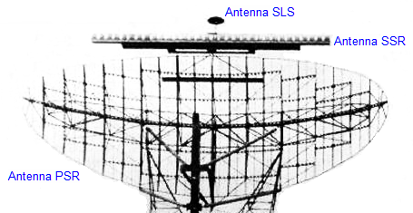
I radar di sorveglianza sono normalmente composti da tre antenne, come mostrato in figura.
Il radar vero e proprio usa l'antenna più grande e si chiama radar di sorveglianza primario (abbreviato in
PSR).
L'altro si chiama radar di sorveglianza secondario (abbreviato in
SSR), anche se, in realtà, il suo principio di funzionamento è diverso da quello dei radar (come vedremo).
La piccola antenna in alto è usata per la soppressione dei lobi secondari (
SLS) generati dall'antenna dell'SSR (v. oltre).
Radar di sorveglianza primario
Il radar è essenzialmente uno strumento di misura che effettua due o più misurazioni simultaneamente.
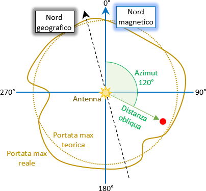
Il tipo di radar che interessa la strage di Ustica misura l'angolo di un bersaglio rispetto ad una direzione prefissata (di solito il
nord magnetico) e la sua distanza da un punto prefissato (di solito l'antenna del radar stesso).
La figura evidenzia gli elementi fondamentali di un PSR: la copertura teorica e reale, l'azimut e la distanza del bersaglio.
Si nota come la copertura reale differisca da quella teorica, principalmente a causa dell'orografia.
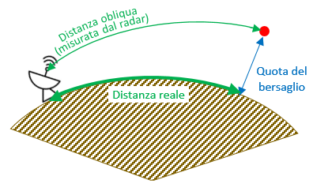
È da notare lo strano aggettivo usato per la distanza: distanza
obliqua (dall'inglese
slant range).
La distanza misurata dal radar, oltre ad essere affetta dall'usuale errore strumentale (come accade con qualunque strumento di misura) è anche falsata dall'errore introdotto dalla quota del bersaglio.
Infatti la distanza che si vorrebbe conoscere è quella indicata con "Distanza reale", perché è quella utile per il calcolo delle coordinate geografiche del bersaglio, ma il radar fornisce una distanza sempre maggiore di quella reale (a meno dell'errore strumentale) ed è tanto maggiore quanto più alta è la quota del bersaglio.
A causa della presenza dell'atmosfera, inoltre, il fascio emesso dall'antenna viene normalmente incurvato verso il basso, costringendo il segnale a percorrere una distanza ancora maggiore, falsando ulteriormente la misura.
L'incurvatura (qui mostrata enormemente amplificata per maggior chiarezza) è causata dalla variazione dell'indice di rifrazione dell'aria, che normalmente diminuisce all'aumentare della quota.
È pur vero che nel normale utilizzo aeronautico la differenza tra la distanza obliqua e quella reale è piccola al punto di non costituire un problema.
Ora che abbiamo appurato cosa misura un radar primario, possiamo vedere come fa ad eseguire tali misurazioni.
Il funzionamento reale del radar è piuttosto complesso, ma il principio su cui si basa un PSR è molto banale.
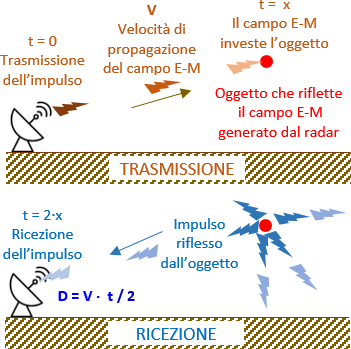
Misurazione della distanza
Concettualmente possiamo immaginare che il radar emetta un impulso di elevata potenza che si propaga nell'aria ad una velocità
V pari a circa 299 700 km/s (circa 90 km/s più lento della
velocità della luce nel vuoto). Il valore di
V è calcolabile con la formula
V = c / n, dove
c è la velocità della luce nel vuoto e
n è l'
indice di rifrazione dell'aria, variabile a bassa quota tra 1,00026 e 1,00046, normalmente assunto pari a 1,0003.
Dopo la trasmissione dell'impulso, l'elettronica del radar commuta l'antenna dal trasmettitore al ricevitore.
Un eventuale oggetto (tipicamente metallico) investito dal segnale radar riflette il campo elettromagnetico in quasi tutte le direzioni. Se questo segnale riflesso arriva all'antenna del radar con una potenza superiore ad una soglia minima, il radar riesce a discriminare l'oggetto e a presentarlo sullo schermo. Ciò si verifica, solitamente, quando il bersaglio è sufficientemente grande e a quota sufficientemente elevata (molti fattori influenzano la reale capacità di riflettere il segnale radar).
Cronometrando il tempo
t trascorso dalla trasmissione dell'impulso alla ricezione dello stesso impulso riflesso dall'oggetto, è possibile calcolare la distanza obliqua dell'oggetto dall'antenna tramite la banale relazione:
D = 299700 · t / 2, dove la divisione per 2 tiene conto del viaggio andata e ritorno dell'impulso.
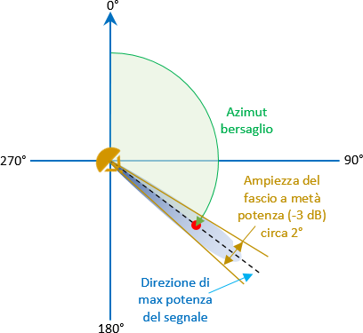
Misurazione dell'azimut
La direzione in cui si trova il bersaglio viene determinata facendo ruotare l'antenna su se stessa tramite un albero dotato di un sensore che rileva l'angolo di rotazione rispetto ad una direzione prestabilita (solitamente il nord magnetico).
Se il segnale radar viene irradiato con un fascio molto stretto, tipicamente non più ampio di un paio di gradi, la direzione del bersaglio è quella corrispondente all'angolo di rotazione dell'antenna quando questa riceve il segnale riflesso alla massima potenza, che capita quando il bersaglio si trova al centro del fascio radar.
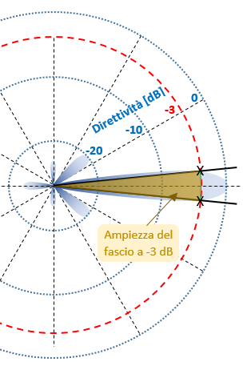
La figura mostra come viene determinata l'ampiezza del fascio radar (del lobo principale).
Questo è un esempio di un diagramma polare di radiazione di un'antenna molto direttiva (come quelle dei radar). In pratica, è come se si osservasse dall'alto (sulla verticale dell'antenna) il campo elettromagnetico irradiato dall'antenna.
Il diagramma è usato per ricavare il valore della
direttività dell'antenna in corrispondenza di un dato angolo rispetto alla direzione di puntamento (qui raffigurata verso destra). Si vede che lungo questa direzione la direttività è massima, cioè l'antenna concentra gran parte della potenza emessa verso la direzione in cui è puntata. Si notano alcuni lobi secondari, indesiderati per varie ragioni, tra le quali c'è la dispersione di una parte di potenza in direzioni non volute
La direttività di un'antenna radar è molto elevata e può superare i 50
dB, tuttavia il diagramma riporta una direttività massima pari a 0 dB. Ciò viene fatto per indicare una scala relativa (non valori assoluti); in altri termini, il diagramma è normalizzato. Se, ad esempio, esso si riferisse ad un'ipotetica antenna avente una direttività pari a 47 dB, il valore -3 del diagramma equivarrebbe a 47 - 3 = 44 dB.
Usando le formule del link, abbiamo che una differenza di -3 db equivale a 10
-0,3 = 0,501 (sempre arrotondato a 0,5). Cioè, la
densità di potenza irradiata nella direzione in cui la direttività è di 3 dB inferiore a quella massima è pari alla metà della densità di potenza irradiata nella direzione di puntamento. Per questo l'ampiezza del fascio viene detta "a metà potenza".
La verifica può anche essere fatta convertendo i valori espressi in decibel nei corrispondenti valori adimensionali: 47 dB = 10
4,7 = 50118,723 e 44 dB = 10
4,4 = 25118,864. Facendo 25118,864 / 50118,723 otteniamo 0,501, a conferma che una direttività di 44 dB è la metà di una direttività pari a 47 dB.
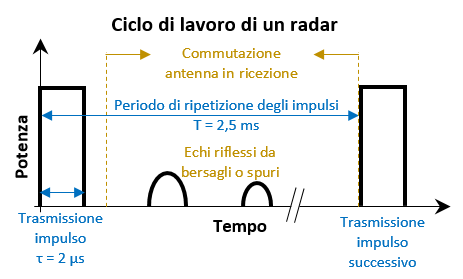
Qui vediamo un esempio del tipico ciclo di lavoro di un PSR.
Forse la prima cosa che salta all'occhio è che il radar trasmette per un tempo brevissimo rispetto al ciclo di lavoro. Trasmette, infatti, un impulso per circa 2 milionesimi di secondo, poi si mette in ricezione per una durata oltre mille volte più lunga della trasmissione (in genere, un ciclo dura da 2,2 a 3 ms, dipende dalla distanza massima alla quale si vuole rilevare i bersagli).
Considerando che un radar di rotta difficilmente viene usato oltre 200 nm (370 km), possiamo calcolare che il tempo massimo di viaggio dell'impulso per arrivare al bersaglio è
t = 370 / 299700 = 1,2 ms, quindi il tempo che il radar deve attendere prima di trasmettere il successivo impulso (per evitare ambiguità in distanza) è 2,4 ms.
La figura riporta due echi d'esempio ricevuti dall'antenna, precisando che potrebbero anche essere falsi echi. Proviamo a calcolare la potenza approssimativa posseduta da un'eco che ritorna all'antenna radar dopo essere stata riflessa da un DC-9-15 (area equivalente pari a 10 m
2) situato a 129 nm (240 km) dall'antenna (come l'IH870 prima dell'abbattimento).
Ciò che serve è la cosiddetta equazione del radar. Tra i tanti siti che la trattano, possiamo sfruttarne uno molto pratico:
Radar Systems - Range Equation.
Supponiamo che la frequenza di lavoro sia 1 GHz (è solo un esempio che non prende in considerazione i radar realmente presenti all'epoca della strage), per cui la lunghezza d'onda è pari a
λ = 299,7·106 / 109 = 0,2997 m. La potenza di trasmissione è normalmente molto elevata e può arrivare fino a 5 MW, ma poniamola pari ad un valore più verso il basso:
Pt = 1 MW (per il radar Marconi era 500 kW). Per il guadagno dell'antenna usiamo
G = 37 dB = 103,7 = 5012. L'area equivalente dell'antenna è data da
Ae = G·λ2 / (4π) = 35,8 m2. In teoria, bisognerebbe considerare anche l'attenuazione atmosferica, ma per frequenze così "basse" (per un radar) l'attenuazione è molto bassa (circa 0,5 dB ogni 100 km).
Dall'equazione del radar otteniamo
Pr = 3,4 pW. Se non volessimo usare il prefisso
pico, bisognerebbe dire che la potenza dell'eco disponibile all'ingresso del ricevitore del radar è 3,4 millesimi di miliardesimo di watt, a fronte di 1 milione di watt in uscita dal trasmettitore. È impressionante il rapporto tra la potenza ricevuta e quella trasmessa:
0,0000000000034 / 1000000 = 3,4·10-18.
Nei radar di sorveglianza, è facilmente intuibile che l'ampiezza del fascio deve essere molto stretta nel piano orizzontale e molto ampia in quello verticale. Infatti, la piccola ampiezza orizzontale consente d'irradiare quasi tutta la potenza dove serve e consente di migliorare la precisione nella misurazione dell'azimut di un bersaglio.
Viceversa, una buona ampiezza verticale è dettata dalla necessità di voler rilevare i bersagli a quote sia basse che alte.
Non tutti i radar devono avere le stesse caratteristiche dei radar di sorveglianza. I quotametri, ad esempio, hanno esigenze quasi esattamente opposte a quelle appena descritte. Essi, infatti, dovendo rilevare la quota dei bersagli, hanno bisogno di un fascio molto stretto in elevazione e sufficientemente ampio in azimut.
La copertura verticale di un radar di sorveglianza primario può essere appurata consultando il suo diagramma di copertura.
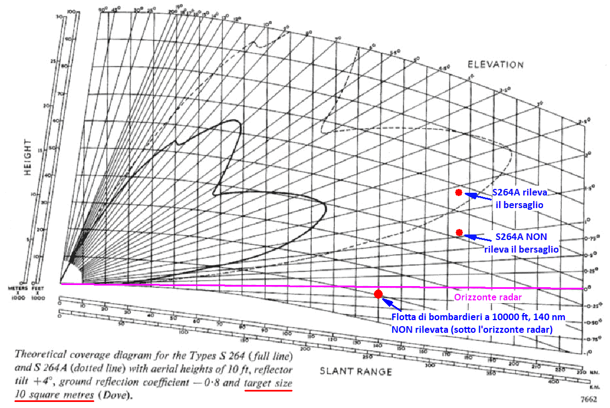
Questo è un diagramma teorico di copertura d'esempio (tratto dal PDF "
Types S264 and S264A") che mostra un'ampiezza in elevazione (circa 10/15°) molto superiore di quella in azimut (un paio di gradi).
L'aggettivo "teorico" sta ad evidenziare che la copertura reale del radar è variabile. Principalmente varia in funzione delle condizioni atmosferiche e particolarmente significativo è il fenomeno della
propagazione anomala.
Dal diagramma risulta chiaro che un aereo avente una data superficie equivalente viene rilevato dal radar
solo se si trova al di sopra della quota minima di copertura. Il diagramma mostra questa quota per un bersaglio avente una superficie equivalente pari a 10 m
2 (circa uguale a quella di un DC-9).
Nel caso di un bersaglio con una superficie equivalente inferiore a 10 m
2, la quota minima di copertura aumenta, ma non è detto che a quota maggiore il bersaglio venga rilevato, perché è pur sempre necessaria una superficie minima che sia in grado di riflettere una sufficiente quantità di segnale.
La probabilità di rilevare un bersaglio è maggiore di zero per quote comprese tra l'orizzonte radar e la quota minima di copertura, ma al di sotto dell'orizzonte radar (qui rappresentato dalla linea viola) la probabilità di rilevamento è nulla. Ciò significa che se, ad esempio, una flotta di grossi bombardieri volasse a 10000 ft e a 140 nm da un qualunque radar, questa non sarebbe in alcun modo rilevabile (in condizioni nominali di funzionamento) poiché, come mostra il diagramma, si troverebbe al di sotto dell'orizzonte radar.
Se, tuttavia, fosse in atto il fenomeno della superrifrazione, il fascio radar sarebbe curvato verso il basso e ciò potrebbe rendere possibile il rilevamento dei bersagli situati al di sotto dell'orizzonte
nominale, ma resta sempre valido il fatto che nessun bersaglio può essere rilevato al di sotto dell'orizzonte radar "effettivo", cioè quello presente in un dato momento.
Il fenomeno della superrifrazione è certamente utile per rilevare bersagli fino a quote molto più basse del normale, ma quando il fenomeno è particolarmente accentuato, il lobo principale arriva a toccare la superficie terrestre (anche a grande distanza), facendo comparire nello schermo radar un gran numero di plot spuri (clutter). Quando ciò si verificava, per un controllore dotato degli apparati dell'epoca era quasi impossibile rilevare bersagli senza l'ausilio del radar secondario (v. oltre).
Rilevamento dei bersagli da parte del radar Marconi
Il radar Marconi era quello normalmente usato dai controllori di Roma (in particolare l'estrattore 1, v. "Motivazioni - Parte 1a", seconda metà di pag. 148).
Il funzionamento molto particolare di questo radar richiede una trattazione specifica.
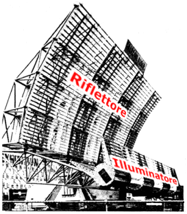
Questa è l'enorme antenna del radar Marconi S264 (peso complessivo di oltre 8 tonnellate).
Essa è composta dal riflettore lineare (lungo 16,5 m e alto 3,6 m) e dall'illuminatore a guida fessurata.
Il riflettore, come suggerisce il nome, raccoglie e riflette il campo elettromagnetico che lo investe; in trasmissione, il segnale emesso dall'illuminatore viene diretto verso il riflettore che provvede ad irradiarlo nella direzione voluta, facendo assumere al campo elettromagnetico la forma voluta, mentre in ricezione, il segnale che investe il riflettore viene convogliato nell'illuminatore per essere elaborato e presentato sullo schermo radar.
La figura è utile anche per comprendere la dicitura "
reflector tilt +4°" che compare nella didascalia del diagramma di copertura. Infatti, è possibile inclinare il riflettore di alcuni gradi in avanti (fino a 10°) o all'indietro (fino a 1°). Così facendo, contrariamente a quanto si potrebbe pensare, si varia la forma dei lobi e non la loro elevazione sul terreno.
Installando l'antenna molto vicina al suolo, si sfrutta la riflessione del terreno per aumentare la portata del radar.
Il diagramma del Marconi S264AH installato a Fiumicino (v. allegati alla relazione Pisano ad inizio pag. 29) è presente nel PDF "Marconi Radar - Type S264 Series" (ultima pagina).
Dal diagramma si può appurare che la copertura nominale per un DC-9 a 129 nm (distanza dell'IH870 dal Marconi al momento dell'abbattimento) è circa 31000, mentre l'IH870 viene rilevato a circa 26000 ft (quota sul livello del mare corrispondente, quella sera, al livello di volo 250), quindi doveva essere in atto il fenomeno della superrifrazione che abbassava il lobo inferiore di qualche decimo di grado.
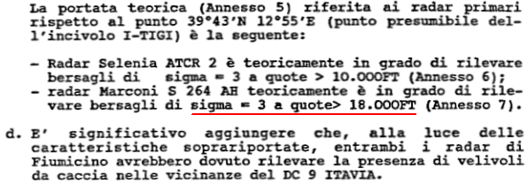
Sempre a pag. 29 degli allegati alla relazione Pisano, viene affermato che un bersaglio situato alla distanza dal radar Marconi pari a quella del DC-9 Itavia e avente una superficie equivalente (sigma) pari a 3 m
2 viene rilevato se si trova ad almeno 18000 ft.
Nella relazione non si fa riferimento alcuno alla qualità della propagazione del segnale radar; ciò che viene affermato, quindi, è da intendersi valido per il funzionamento nominale del radar ed è, pertanto in netto contrasto con il diagramma teorico di copertura pubblicato dal costruttore del radar.
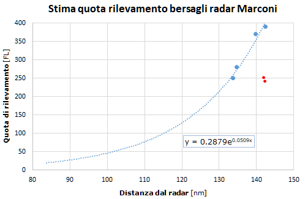
Questo grafico mostra una stima della reale copertura del radar Marconi la sera della strage lungo l'azimut in cui si trovava l'IH870. Si nota un andamento simile a quello riportato nel digramma teorico.
I dati sono ricavati dalla seguente tabella, in cui sono riportati i plot più distanti dal radar Marconi (estrattore 3) ricevuti sia dal radar primario che dal radar secondario
[nota]
:
| Orario | FL | DST | AZM | ID | Note |
| 19:36:56 | 240 | 142,44 | 217,42 | 4223 | --- |
| 18:28:29 | 280 | 134,75 | 195,18 | 0225 | Presenti 2 plot a 142 nm, volo AZ865 |
| 18:44:16 | 390 | 142,44 | 163,37 | 0226 | Volo Beatours KT881 Malta-London Gatwick |
| 18:27:45 | 250 | 133,69 | 161,08 | 5340 | Presente 1 plot a 138 nm, volo Roma-Palermo |
| 19:12:07 | 370 | 139,75 | 161,08 | 1235 | Volo Air Malta KM153 Londra-Malta |
| 18:49:44 | 250 | 142,06 | 142,98 | 0352 | Volo ATI BM330 Napoli-Palermo |
Le due righe con l'azimut in rosso sono escluse dall'
estrapolazione, poiché gli aerei si trovano ad un azimut troppo distante da quello del DC-9 Itavia (circa 163°), quindi la copertura è diversa.
Anche questo grafico lascia ipotizzare che la sera della strage doveva essere in atto il fenomeno della superrifrazione. Si può stimare che, grazie a questo fenomeno, il DC-9 Itavia poteva essere rilevato dal Marconi, quella sera, fino al livello di volo 200 (circa 21000 ft), nel punto del disastro, contro i 31000 ft teorici dati dal diagramma di copertura.
Siccome il grafico è stato ottenuto prendendo in considerazione la capacità del radar di rilevare aerei di linea (nemmeno tanto piccoli), si può ritenere che la quota minima di rilevamento sia valida (seppur approssimativamente) per aerei di linea e non per aerei più piccoli, come i caccia. Ciò implica che la quota minima di rilevamento per un piccolo aereo (come un caccia) situato lungo l'azimut in cui si trovava il DC-9 doveva essere significativamente maggiore di quella ricavabile dal grafico.
Ciò detto, il grafico, sebbene rappresenti solo una stima, è comunque utile per evidenziare la scarsa probabilità di poter rilevare un bersaglio di soli 3 m2 (meno di 1/3 di un DC-9) a 18000 ft (come riporta la relazione Pisano); e questo in presenza della superrifrazione. Ipotizzare che un bersaglio così piccolo possa essere rilevato a 18000 ft in condizioni nominali di funzionamento del radar può essere solo una fantasia priva di qualunque fondamento.
Ciò che risulta evidente è che questa fantasia viene messa in connessione diretta con quanto affermato al punto d della relazione e cioè serve per escludere in modo assolutamente arbitrario la presenza di caccia intorno al DC-9.
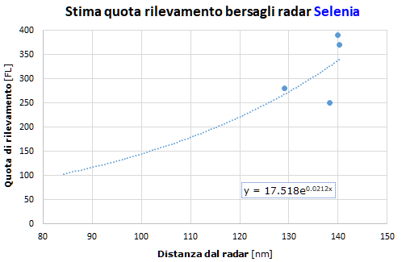
Sebbene questo paragrafo sia dedicato al radar Marconi, può essere utile fare una breve parentesi per stimare la copertura del radar Selenia.
Il grafico si basa sugli stessi aerei usati per il Marconi. Ecco la tabella per il Selenia:
| Orario | FL | DST | AZM | ID | Note |
| 18:29:17 | 280 | 129,13 | 195,72 | 0225 | Copertura discontinua. A dist. maggiore viene ricevuto qualche plot fino a 139,7 nm. |
| 18:44:37 | 390 | 139,88 | 163,80 | 0226 | - |
| 18:28:22 | 250 | 138,38 | 162,93 | 5340 | - |
| 19:12:10 | 370 | 140,25 | 161,52 | 1235 | Ricevuto in modo discontinuo dopo 131 nm. |
Pur essendo una stima, è evidente la significativa differenza rispetto al Marconi. Nel punto del disastro, il Selenia ha bisogno che i bersagli si trovino oltre 5000 ft più in alto del Marconi. Ciò nonostante la relazione Pisano riporta 8000 ft più in basso del Marconi.
I normali fenomeni fisici che regolano il funzionamento di ogni radar (trattati principalmente a proposito del diagramma di copertura) devono essere tenuti in considerazione per azzardare deduzioni sulla reale presenza di aerei nei dintorni del DC-9 a distanza superiore ai 2 km, mentre per distanze inferiori, è indispensabile conoscere nel dettaglio le modalità di funzionamento di questo particolare radar, diverse dagli altri. Infatti, il Marconi era stato sottoposto, nel corso degli anni, ad una serie di regolazioni elettroniche che lo facevano funzionare in un modo molto particolare.
L'argomento è piuttosto complesso, ma molti dettagli sono riportati nella relazione dei tre consulenti ausiliari (cioè esterni al collegio peritale) nominati dal collegio Blasi: il professor Galati e gli ingegneri Giaccari e Pardini (questi ultimi due dipendenti della Selenia SpA).
La relazione è riportata nel "Capitolo VIII - Relazione degli ausiliari Giaccari ed altri - 05.02.90." dell'"Ordinanza di rinvio a giudizio - Sentenza istruttoria di proscioglimento" pronunciata dal Giudice Istruttore Rosario Priore.
In merito a tale relazione, è utile sottolineare quanto viene affermato nelle requisitorie dei Pubblici Ministeri, 2° capitolo della parte 1a (v. il "File Pdf unico requisitorie dei Pm" a pag. 21):
NEL 1990 LA SELENIA PREDISPONE UNA SECONDA RELAZIONE, REDATTA DA GIACCARI,
GALATI E PARDINI, NELLA QUALE SI RICOSTRUISCONO LE CONDIZIONI DI FUNZIONAMENTO
DEI RADAR IN MANIERA DIVERSA E IN PUNTI NON SECONDARI, RISPETTO A QUANTO
PROSPETTATO IN PRECEDENZA. SI SOTTOLINEA CHE NON SI TRATTA DI UNA DIFFERENZA
INTERPRETATIVA, MA DI UNA ATTESTAZIONE DI FATTI, CHE SI INDICANO ESSER
DIFFERENTI RISPETTO A QUANTO AFFERMATO IN PASSATO.
È caldamente raccomandato di leggere e comprendere bene tutta la relazione (essendo stata scritta da tecnici di provata competenza), ma per la comprensione degli argomenti trattati in questo sito, è sufficiente prendere atto di quanto segue.
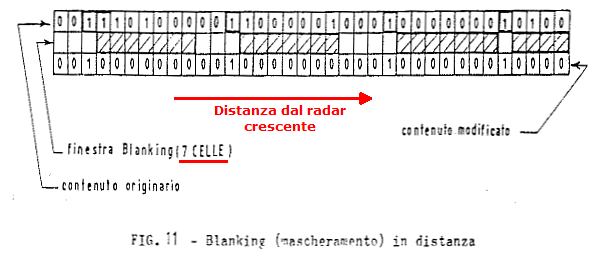
Verso metà pagina 19: "
Tale logica [quella di funzionamento degli estrattori, ndr]
, che opera a livello di singolo sweep, e quindi prima della «detezione» del plot, opera un blanking (mascheramento) di un certo numero di celle successive in distanza al verificarsi di un «1» (Fig.11). La presenza di un «1» ad una qualsiasi cella pone a «zero» il contenuto di un certo numero di celle a distanze successive, indipendentemente dal loro contenuto originario. Cioè un «1» ad una certa cella crea un'«ombra» su un certo numero di celle successive.".
La figura mostra che il potenziale bersaglio rilevato nella terza cella in distanza (da sinistra, cioè quella più vicina al radar) dà origine al mascheramento di eventuali bersagli presenti nelle 7 celle successive (finestra di mascheramento pari a 7 celle in distanza).
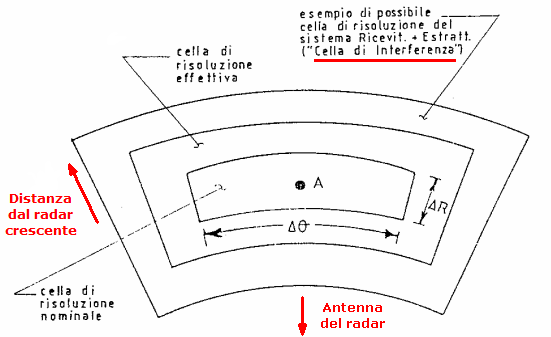
Al termine della stessa pagina possiamo leggere: "
Pertanto possiamo dire che per il radar Marconi (e non per il Selenia) la dimensione radiale, cioè lungo la distanza dal radar, della «zona di interferenza» tra due oggetti si allunga al valore di circa 1,09NM, indipendentemente della durata dell’impulso. Questo fenomeno deve essere attentamente considerato quando si hanno più detezioni «vicine» o comunque più oggetti, vicini, anche quando non diano luogo a detezioni separate. Ciò sia ai fini della detezione stessa, sia ai fini della precisione di misura in distanza e, soprattutto, in angolo.".
La frase sottolineata verrà ripresa in considerazione tra poco, quando si calcolerà la risoluzione del radar in distanza ("cella di risoluzione nominale" indicata in figura) che, appunto, dipende dalla durata dell'impulso trasmesso (v. la fig. 7 completa a pag. 11 del già citato "
Capitolo VIII" con la formula ΔR = c · τ / 2, dove τ è la durata dell'impulso).
L'esistenza della cella o zona d'interferenza ha varie implicazioni (dettagliatamente spiegate nella già citata relazione). Ai fini della strage di Ustica, ciò che più conta è il fenomeno del mascheramento.
Tale fenomeno comporta che un aereo come un MiG, avente un'estensione angolare inferiore a quella del DC-9 (se posti all'incirca alla stessa distanza dal radar), non viene mostrato sullo schermo dei controllori quando si trova all'interno della zona d'interferenza del DC-9 e a distanza maggiore dall'antenna rispetto al DC-9.
Siccome il fenomeno del mascheramento si estende per una distanza pari a 7 celle e il passo di campionamento è 1,93 µs (v. tabella 3 a pag. 16, sempre del cap. VIII), la distanza di mascheramento è pari a 1,93 · 10-6 / 2 · 299,7 · 106 · 7 = 2024 m o 1,09 nm, dove 299,7 · 106 è la velocità di propagazione del segnale attraverso l'aria (circa 90 km/s più lento che nel vuoto) e la divisione per 2 tiene conto del tragitto andata e ritorno.
Oltre alla limitazione imposta a livello della logica di funzionamento degli estrattori, esiste anche la limitazione fisica per ogni radar consistente nell'impossibilità di distinguere due aerei situati all'interno della stessa cella di risoluzione effettiva, qualunque sia la posizione relativa dei due aerei rispetto all'antenna. Ciò significa che i due aerei produrranno un solo plot affetto da errori in distanza ed azimut maggiori del normale.
Stando al disegno di cui sopra, la cella di risoluzione nominale è ampia 1 cella in distanza (289 m) e 1 fascio radar a -3 dB in azimut (circa 2 gradi). La grandezza della cella effettiva varia in più o in meno a seconda dell'intensità del segnale ricevuto.
A prescindere dalla grandezza della cella di risoluzione effettiva, i radar come il Marconi non hanno alcuna possibilità di distinguere due bersagli posti ad una distanza radiale dr inferiore alla metà della lunghezza spaziale dell'impulso trasmesso (lunghezza pari a τ · c).
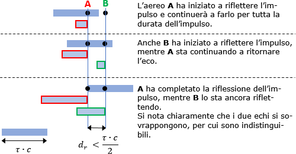
Il motivo è mostrato dall'immagine, in cui il radar è situato a sinistra e l'impulso viaggia verso destra.
Per calcolare la risoluzione in distanza, possiamo utilizzare la formula presentata nella pagina "
Potere risolutivo della distanza" del sito
radartutorial.eu.
Siccome la durata nominale dell'impulso τ è pari a 3,3 µs ± 10% (v. pag. 4 del "
Capitolo VIII"), la risoluzione nominale in distanza è pari a: 3,3 · 10
-6 · 299,7 · 10
6 / 2 = 495 m.
Per un aereo che deve nascondersi ai radar sfruttando il DC-9, la risoluzione migliore (quindi a suo sfavore) la si ottiene ponendosi all'estremo inferiore della durata dell'impulso (2,97 µs), ottenendo 445 m.
Quindi, fintanto che l'ipotetico MiG (o altro aereo) si fosse mantenuto all'interno dello stesso fascio radar (chiamato anche
sweep) in cui si trova il DC-9 e ad una distanza radiale inferiore a circa mezzo chilometro, sullo schermo radar sarebbe comparso un solo plot, qualunque fosse stata la posizione relativa tra il MiG e il DC-9.
Osservando il diagramma di copertura verticale del radar S264AH, si nota che un bersaglio avente una superficie equivalente pari a 10 m2 può essere rilevato fino a circa 146 nm. Si può legittimamente ipotizzare che un bersaglio di dimensioni maggiori possa essere rilevato a distanza maggiore, purché al di sopra dell'orizzonte radar.
Tramite l'equazione del radar vista in precedenza, si può calcolare la distanza (teorica) di rilevamento di un bersaglio avente una superficie equivalente pari, ad esempio, a 20 m2.
L'equazione può essere riscritta esprimendola in funzione di σ: R4 = k · σ, dove k comprende tutto ciò che compare nella formula tranne, ovviamente, σ. Siccome R = 146 nm, abbiamo k = 1464 / 10 = 45437185,6.
Per σ = 20 m2, la distanza vale R = (45437185,6 · 20)0,25 = 173,6 nm. Si potrebbe ritenere, quindi, che un grosso aereo possa essere rilevato ad oltre 170 nm dall'antenna, ma non è così. Il motivo ce lo fa capire il teste Giordani Bruno, che ha svolto l'"attività di tecnico per lo sviluppo e la messa in funzione dell’estrattore primario e secondario, diciamo, che è stato utilizzato nel sito di Ciampino" (v. esame a circa metà pag. 52). Verso metà pag. 57 leggiamo:
[...] la portata massima del radar viene divisa in celle elementari e nel nostro caso in mille e ventiquattro celle elementari da due microsecondi di tempo, [...]
Quando il teste parla di 2 µs, è chiaro che sta arrotondando il valore del passo di campionamento (visto prima), pari a 1,93 µs.
Siccome una cella elementare o cella in distanza (come definita in precedenza) è lunga (in senso radiale): 1,93 · 10-6 · 299,7 · 106 / 2 = 289,2 m e il contatore delle celle può contare 1024 valori, la distanza massima presentabile sullo schermo radar si ottiene moltiplicando 289,2 per 1024, ottenendo 296140,8 m, equivalenti a 159,9 nm.
Non a caso, la distanza massima dei plot presenti nei quattro tabulati radar di Ciampino è 157,188 nm, lievemente inferiore al limite massimo teorico, probabilmente a causa del passo di campionamento che poteva valere poco meno di 1,91 µs, leggermente inferiore del nominale (1,93 µs).
Radar di sorveglianza secondario
Lo scopo principale di un radar secondario (SSR) è ottenere informazioni sull'identità di un velivolo adeguatamente equipaggiato (come vedremo).
Un SSR può essere utilizzato anche per ricavare la posizione dei bersagli, ma per farlo, contrariamente a quanto accade per un PSR, un SSR ha bisogno della collaborazione dell'equipaggio del velivolo, senza la quale, un radar secondario è assolutamente inutile.
È, quindi, chiaro che la differenza tra il radar primario e il secondario è che il PSR rileva gli oggetti per il semplice fatto che essi riflettono l'energia irradiata dal radar, mentre un SSR ha bisogno dell'attiva collaborazione dell'equipaggio del velivolo che deve impostare nel transponder particolari codici e abilitarne il funzionamento. Ne consegue che le potenze di trasmissione in gioco sono nettamente diverse tra i due tipi di radar. Infatti un PSR, per poter ricevere un debole riflesso, deve trasmette con una potenza di picco enorme (intorno al megawatt), mentre un SSR, che riceve le risposte generate dal trasmettitore dei velivoli (e non da un riflesso), ha bisogno di potenze molto più basse, circa mille volte inferiori a quelle dei PSR.
Il funzionamento dei radar secondari si basa su un meccanismo d'interrogazione e risposta; l'SSR trasmette l'interrogazione opportunamente codificata e i velivoli che la ricevono trasmettono la risposta che varia in base all'interrogazione ricevuta.
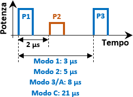
L'interrogazione è composta dai due impulsi P1 e P3, codificati secondo vari modi ben definiti, chiamati modo 1, 2, 3/A e C (qui vengono considerati solo i modi che interessano la strage di Ustica).
I modi 1 e 2 sono esclusivamente militari, mentre i modi 3/A e C sono sia militari che civili. Il fatto di scrivere "3/A" indica che il modo 3 militare è equivalente al modo A civile (i due modi differiscono solo per la risposta inviata dal velivolo quando questo attiva l'emergenza).
L'insieme dei modi 1, 2 e 3 viene chiamato
SIF.
L'impulso P2 non fa parte dell'interrogazione e la sua utilità la vedremo tra breve.
I modi 1, 2 e 3/A forniscono informazioni sull'identità dei velivoli interrogati, mentre il modo C serve per fornire la quota di volo. La seguente tabella riassume il normale utilizzo dei quattro modi usati all'epoca della strage di Ustica:
| Modo | Valori ammessi | Utilizzo |
| 1 | 2 cifre; la 1a da 0 a 7, la 2a da 0 a 3 | Identificazione del tipo di missione svolta o tipo di velivolo, es: 10 = AWACS, 61-62-63 = intercettazione, 73 = emergenza o indicazione di posizione.
Normalmente i codici non sono assegnati dai controllori. |
| 2 | 4 cifre da 0 a 7 | Identificazione puntuale del velivolo, cioè gruppo d'appartenenza e numero del velivolo o pilota. Normalmente il pilota non riesce a modificare questo codice in volo, almeno non può farlo facilmente. |
| 3/A | 4 cifre da 0 a 7
o 2 cifre da 0 a 7 | Codice univoco assegnato dai controllori sia civili che militari all'interno di una determinata area (non possono esistere due aerei con lo stesso codice nello stesso momento).
Gli aerei militari con solo 2 cifre (come gli F-104) non trasmettevano alcun impulso per la 3a e 4a cifra che quindi venivano ricevute come "00". |
| C | Non impostabile dal pilota | Invia al radar secondario un codice che rappresenta la quota di volo del velivolo. |
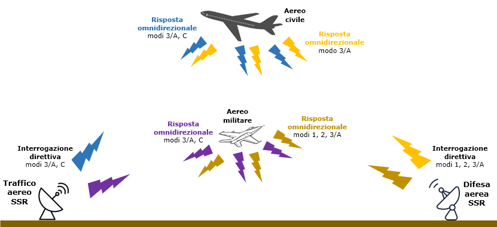
L'immagine dovrebbe aiutare a capire il funzionamento di base di un SSR.
Si vedono due radar secondari, uno facente capo ad un ente per il controllo del traffico aereo (ad esempio Roma Radar) e l'altro facente capo ad un ente per la difesa aerea (ad esempio Poggio Ballone).
L'SSR del
TA, mentre la sua antenna ruota, interroga i transponder che via via si vengono a trovare all'interno del fascio di trasmissione del radar (ampio circa un paio di gradi). Quando un transponder di un velivolo viene investito dal fascio radar, la circuiteria decodifica gli impulsi ricevuti per determinare il modo usato per l'interrogazione. Se l'interrogazione è di modo 1, il transponder di un aereo civile non la riconosce e non risponde, mentre uno militare riconosce quell'interrogazione e trasmette in tutte le direzioni (o quasi) il codice che il pilota militare ha impostato nel modo 1. Stessa cosa per il modo 2 (il cui codice, generalmente, non è modificabile dai piloti dei caccia).
Quando un velivolo, civile o militare, rileva gli impulsi di un'interrogazione di modo 3/A o C, il transponder la riconosce ed inizia a trasmettere i due treni d'impulsi che codificano il codice impostato nel transponder e la quota misurata dall'altimetro barometrico.
Nell'immagine d'esempio si suppone che l'SSR della
D.A. non usi il modo C in quanto i siti della D.A. sono quasi sempre dotati di un quotametro (un apposito radar usato per rilevare la quota dei bersagli).
Vediamo un esempio pratico in cui un SSR della D.A. interroga un aereo militare che risponde ai modi 1, 2 e 3.
Nel PDF (4,7 MiB) "Overview of SSR and IFF Systems" (in lingua inglese, ma a noi serve solo un'immagine), a pag. 64 si vedono le forme d'onda delle interrogazioni e delle risposte. A sinistra ci sono gli impulsi trasmessi dall'SSR e a destra ci sono le risposte inviate dal transponder degli aerei.
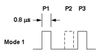
Immaginiamo l'SSR di Poggio Ballone che inizia a trasmettere l'interrogazione di modo 1. Dopo 2 µs dall'inizio della trasmissione di
P1, inizia quella di
P2 (usato per la soppressione delle risposte che sarebbero generate dalla ricezione dei lobi secondari dell'antenna dell'SSR, v. poco più avanti) e dopo 3 µs da
P1 trasmette
P3.
Il ciclo di lavoro del radar secondario è simile a quello già visto per il radar primario. Quindi, una volta trasmessa l'interrogazione, il radar entra in modalità ricezione per una durata intorno ai 2,5 ms (dipende dalla distanza massima alla quale si vogliono ricevere le risposte).
Un ipotetico aereo militare situato a 300 km dal sito radar inizia a ricevere l'impulso P1 di modo 1 dopo circa 1 ms da quando è stato trasmesso (approssimando la velocità di propagazione del campo elettromagnetico con quella della luce, abbiamo t = 300 / 300000 = 0,001 s).
La circuiteria dell'aereo riconosce un'interrogazione di modo 1 ed inizia a trasmettere il codice impostato dal pilota nel modo 1.
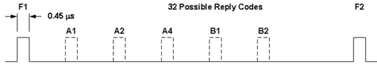
Gli impulsi da trasmettere vengono codificati come mostrato dalla figura. I due impulsi
F1 e
F2 sono sempre presenti (sono gli impulsi di
frame), i tre impulsi
A codificano la prima cifra, mentre i due
B codificano la seconda in base alle banali equazioni:
cifra1 = A1 x 1 + A2 x 2 + A4 x 4 e
cifra2 = B1 x 1 + B2 x 2. Se, ad esempio, il pilota ha impostato "32" nel pannello, gli impulsi presenti sono
A1,
A2 e
B2:
cifra1 = 1 x 1 + 1 x 2 + 0 x 4 = 3 e
cifra2 = 0 x 1 + 1 x 2 = 2.
La risposta di modo 1 inizia il viaggio in quasi tutte le direzioni, fino ad arrivare, dopo 1 ms, all'SSR che ha inviato l'interrogazione. La risposta viene, quindi, decodificata e presentata come numero o simbolo sullo schermo radar.
A questo punto, il radar trasmettere la successiva interrogazione e il ciclo si ripete.
Un aereo civile che riceve le interrogazioni di modo 1 e 2 non riconosce la spaziatura tra P1 e P3, pertanto le ignora, mentre riconosce le interrogazioni di modo 3/A e C, alle quali risponde.
La sequenza delle interrogazioni trasmesse dall'SSR può essere variata dall'operatore in base alle esigenze del momento, secondo quello che viene chiamato Mode Interlace Pattern. Cioè l'operatore può scegliere se trasmettere ripetutamente le interrogazioni di un solo modo, oppure se alternare due o tre modi, o ancora se scegliere una particolare sequenza. Ad esempio, un controllore d'avvicinamento potrebbe essere maggiormente interessato alle risposte di modo 3, il cui codice è stato da lui stesso assegnato all'aereo, mentre è poco interessato alle risposte di modo 1 e 2, perché il tipo di aereo o missione (modo 1) e il pilota (modo 2) poco gli cambia. Quindi, il MIP potrebbe ciclare le interrogazioni con i seguenti modi: 3 2 3, oppure, 3 2 3 1, che si ripetono continuamente. Il secondo pattern d'interrogazione permette di aggiornare tutt'e tre i modi militari ad ogni interrogazione, dando "importanza" al codice assegnato dal controllore.
Tutto questo meccanismo d'interrogazione e risposta non è esente da problemi. Tra quelli che alterano il funzionamento ideale di un SSR c'è quello dell'antenna che irradia il segnale in un modo ben diverso da quello voluto. Infatti le antenne, per quanto direttive possano essere, non irradiano il segnale in un'unica direzione, ma generano molti lobi secondari che, sebbene di potenza molto inferiore di quella del lobo principale, possono comunque generare una falsa interrogazione.
Per evitare (o limitare) che il transponder dei velivoli rispondano alle interrogazioni dei lobi secondari, viene installata un'antenna aggiuntiva coubicata con quella dell'SSR, chiamata SLS o antenna di compensazione.
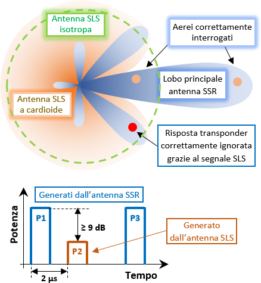
L'immagine mostra il principio di funzionamento usato per la soppressione delle risposte che sarebbero generate dalla ricezione di un'interrogazione proveniente da un lobo secondario di un SSR.
I lobi azzurri sono quelli generati dall'antenna SSR. Si nota il lobo principale che sta interrogando due aerei e un lobo secondario che trasmette un'interrogazione
non voluta ad un altro aereo.
Sono raffigurati, inoltre, due diagrammi d'irradiazione di due tipi d'antenne SLS (ne viene installata soltanto una): una a cardioide (arancione) e una
isotropa (tratteggio verde).
Si vede chiaramente che un'antenna con irradiamento a cardioide è molto più utile di una isotropa, in quanto la potenza irradiata nella direzione del lobo principale è molto bassa, quindi gli aerei all'interno del lobo principale rispondono anche a distanze molto piccole, al contrario di ciò che accadrebbe con un'antenna isotropa.
Il grafico delle forme d'onda mostra gli impulsi P1 e P3 generati dall'antenna dell'SSR, che costituiscono l'interrogazione (se di modo 1, 2, 3/A o C lo stabilisce la spaziatura temporale tra i due impulsi) e l'impulso P2 trasmesso dall'antenna SLS.
Se l'impulso P1 ricevuto dal transponder di un velivolo non ha una potenza almeno 9 dB superiore a quella di P2, la circuiteria genera un segnale che inibisce la ricezione di P3 (
suppressor gate) e, quindi, il transponder non riconosce l'interrogazione e non risponde.
Un altro problema è causato dalla ricezione di una risposta trasmessa da un aereo interrogato da un altro SSR. Ciò accade perché la risposta del transponder dell'aereo è omnidirezionale, per cui può essere ricevuta anche da un radar secondario che non ha interrogato alcun aereo o che ha interrogato un altro aereo in tutt'altra direzione.
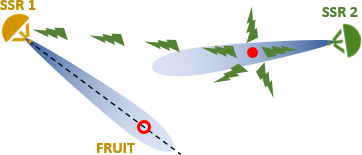
Qui vediamo un aereo (il punto rosso) che viene interrogato dall'SSR 2, che può anche essere situato a notevole distanza dall'SSR 1 (300/400 nm).
L'aereo risponde al radar che l'ha interrogato (SSR 2), ma siccome il radar 1 non si trova troppo distante dall'aereo, anch'esso riceve la risposta (non richiesta). Ciò fa comparire sullo schermo di SSR 1 lo stesso aereo, che però si trova in tutt'altra posizione. Questo falso aereo viene chiamato
FRUIT.
L'azimut in cui compare il FRUIT è quello in cui si trova l'antenna dell'SSR 1 nel momento della ricezione, mentre la distanza dipende dallo sfasamento delle interrogazioni tra i due radar e può essere un punto qualunque lungo l'asse del lobo principale.
In caso di uno spazio aereo abbastanza affollato, lo schermo si riempirebbe di false risposte in posizioni casuali, rendendo impossibile il tracciamento dei contatti da parte del computer asservito al radar.
Per eliminare queste risposte indesiderate si aggiungeva il video defruiter (solitamente era un accessorio, non fornito di serie).
Il funzionamento del video defruiter si basa sulla comparazione di due o tre risposte consecutive ricevute dall'SSR; se l'intervallo di ricezione delle risposte è uguale a quello delle interrogazioni, il circuito fa passare il segnale alla sezione video per la rappresentazione sullo schermo, altrimenti il segnale viene cancellato.
Oltre ai problemi qui esposti, se ne possono presentare anche altri, la cui trattazione è troppo complessa per essere affrontata in questo paragrafo sul funzionamento di base dei radar secondari.
Un ottimo sito che può essere usato per approfondire i concetti qui esposti e gli altri non trattati è sicuramente radartutorial.eu. In particolare, si possono consultare le pagine Garbling/Degarbling e Fruit.
Apparati a bordo dei velivoli
Come già detto, lo scopo principale di un radar secondario è ottenere informazioni sull'identità di un velivolo appositamente equipaggiato e quest'apparecchiatura si chiama transponder. È un dispositivo elettronico che può essere usato per vari scopi, ma quello che interessa in questa sede corrisponde alla terza definizione data da Wikipedia: è un ricetrasmettitore che genera un segnale in risposta ad una specifica interrogazione. Lo scopo del transponder, quindi, è fornire all'SSR le informazioni richieste.
In ambito civile le interrogazioni possono essere trasmesse solo dal radar SSR (non dai velivoli), così come gli SSR sono gli unici a poter ricevere le risposte (i velivoli non possono ricevere le risposte trasmesse da altri velivoli).
In ambito militare, oltre all'ovvia possibilità che hanno gli AWACS d'interrogare altri velivoli, è, oggi, abbastanza usuale trovare velivoli (tipicamente offensivi) che possono interrogare altri velivoli con il loro radar dotato di AIFF (Active IFF), proprio come fanno gli SSR. Nel 1980, questa possibilità era quasi un'esclusiva degli AWACS.
In ambito militare, il transponder viene normalmente chiamato IFF/SIF o semplicemente IFF (il SIF è un'aggiunta all'IFF), ma è sempre un transponder il cui principio di funzionamento è identico a quello usato in ambito civile.
Oggi è impensabile che un aereo sia sprovvisto di transponder, ma all'epoca della strage di Ustica ne potevano essere sprovvisti anche gli aerei soggetti al controllo del traffico; era, tuttavia, quasi impossibile che un aereo di linea non avesse il transponder, perché ciò poteva comportare pesanti penalizzazioni in qualunque spazio aereo servito da un radar di sorveglianza (quindi non soggetto al controllo procedurale).
Oltre alla possibilità di trasmettere gli impulsi impostati nei vari modi (1, 2, 3/A), il pilota può aggiungere (su richiesta del controllore) un ulteriore impulso, chiamato SPI.
Ciò serve al controllore per identificare un aereo in modo inequivocabile, in particolare quando è presente altro traffico nelle vicinanze dell'aereo e quando un aereo viene preso in carico da un controllore. In questi casi, il controllore chiede ai piloti d'identificarsi; in risposta, un pilota preme l'apposito pulsante posto sul pannello del transponder, solitamente identificato con "IDENT". Così facendo, il transponder aggiunge l'impulso SPI in coda a tutti gli altri impulsi del modo trasmesso. Ciò segnala al radar di mettere in evidenza il plot dell'aereo sullo schermo, cambiandogli simbolo e rendendolo più grande e luminoso. Il transponder, ad ogni pressione dell'IDENT, normalmente aggiunge l'impulso SPI per una trentina di secondi.
All'epoca della strage, i piloti militari che dovevano identificarsi su richiesta dei controllori degli enti militari usavano la prassi (non proprio ortodossa) d'impostare il codice 73 nel SIF di modo 1 (v. il paragrafo "Codice 73 del SIF di modo 1" più avanti).
Quando il controllore comunica al pilota il codice da inserire (quasi esclusivamente nel modo 3/A), sarebbe buona norma inibire momentaneamente le risposte, ruotando la manopola del modo di funzionamento del transponder in posizione "Standby", così da evitare la trasmissione di codici casuali mentre si ruotano le manopole. Una volta impostato il codice richiesto, si riporta la manopola principale nella posizione di normale funzionamento.
Questa è normale prassi per i piloti civili, ma non sembrerebbe tale tra i piloti militari. Infatti si nota nei tabulati di Ciampino la presenza del codice di modo 3 5200 per un giro d'antenna (alle 18:32:31) mentre il pilota "cicla" 5400 (su richiesta del controllore di Grosseto Avvicinamento) dal codice 4200 che aveva in precedenza. Egli, quindi, ha fatto fare uno scatto alla manopola della prima cifra (trasmettendo 5200), poi ha ruotato quella della seconda cifra, senza portare l'IFF su "Standby".
Gli apparati a bordo dei velivoli civili sono molto diversi da quelli militari; vediamo le caratteristiche principali dei due tipi di transponder.
Transponder degli aerei civili
Gli aerei civili hanno un pannello più semplice di quelli militari, dal momento che le funzioni sono diverse. I pannelli civili erano molto simili tra loro.
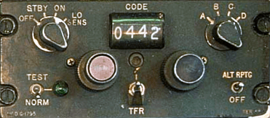
L'immagine mostra un esempio di un vecchio pannello di un transponder.
Gli elementi principali che lo compongono sono le manopole per impostare il codice, la manopola a sinistra per impostare la funzionalità dell'apparato (spento,
stand by, accesso e bassa sensibilità), la manopola a destra per selezionare il modo della risposta (il modo A è equivalente al modo 3 militare) e il pulsante "IDENT".
Il pilota dispone di 2 manopole composte da un pomello centrale per impostare una cifra e da una ghiera esterna per impostare l'altra cifra (soluzione adottata negli aerei di linea) o di 4 piccole manopole per impostare le 4 cifre (soluzione adottata tipicamente per i piccoli aerei dell'aviazione generale). Le 4 cifre possono andare da 0 a 7, sono, quindi, disponibili 4096 codici da 0000 a 7777.
Sebbene siano selezionabili i modi B e D, di fatto essi non sono mai stati usati, quindi il codice impostato è relativo al solo modo A.
Qualora il volo sia soggetto al controllo del traffico aereo (come tutti i voli di linea), il codice da inserire viene sempre comunicato dal controllore. Negli altri casi, i piloti inseriscono un particolare codice predefinito, che varia da stato a stato.
IFF/SIF degli aerei militari
Gli aerei militari hanno un transponder più complesso di quello degli aerei civili.
Di particolare interesse per la strage di Ustica è stabilire il modello esatto di transponder installato a bordo dei TF-104G, in quanto almeno due di questi aerei, decollati da Grosseto, risultano in volo durante la prima fase di crociera del DC-9 Itavia e trasmettono vari codici, tra cui il famigerato 73 di modo 1.
Nel corso degli anni, l'IFF si è evoluto aggiungendo nuove funzionalità alla versione di base e ampliandone altre.
Nella versione postbellica Mark X (di base), l'IFF poteva replicare ai radar di terra soltanto trasmettendo degli impulsi fissi per ognuno dei 3 modi; in altre parole, tutti gli aerei rispondevano nella stessa maniera.
Il SIF aggiunge all'IFF Mark X la possibilità di trasmettere i codici (o numeri) alle risposte di modo 1, 2 e 3, quindi ogni aereo può trasmettere il suo codice per ognuno dei tre modi. Viene, inoltre, aggiunta la modalità "IDENT" (vista prima) e la trasmissione dell'emergenza.
Un ulteriore aggiornamento della versione IFF Mark X (SIF) è l'IFF Mark X (A) che differisce dalla precedente versione solo per la capacità di trasmettere 4096 codici nel modo 3 (4 cifre in base 8, cioè che possono andare da 0 a 7), contro i 64 della versione SIF (2 cifre in base 8).
Consultando il sito theAviationist, possiamo osservare il modello di IFF/SIF montato a bordo di varie versioni dell'F-104.
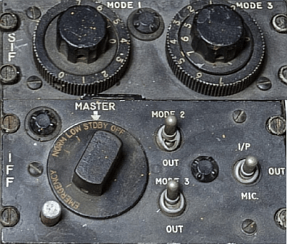
L'immagine mostra più chiaramente gli apparati schematizzati in quel sito e installati nei TF-104G e negli F-104S nel 1980.
Il transponder è composto da quello che può essere definito il pannello principale (IFF) e dalla sua "aggiunta" (SIF) che permette di selezionare i codici da trasmettere nei modi 1 e 3. Da notare che non è possibile impostare da pannello il codice di modo 2.
Si nota la manopola principale "MASTER" che regola il funzionamento dell'apparato con la posizione di notevole interesse "EMERGENCY" (sulla quale si tornerà nel prossimo paragrafo). Prima di poter ruotare la manopola in questa posizione, il pilota doveva premere il pulsante bianco, altrimenti non si poteva andare oltre la posizione "NORM" (normale funzionamento).
Ci sono, poi, i due deviatori a levetta "MODE 2" e "MODE 3", usati per attivare/disattivare le risposte nei rispettivi modi (notare l'impossibilità di disattivare le risposte di modo 1).
A destra troviamo il deviatore caricato a molla usato per trasmettere una particolare risposta che consentiva di evidenziare il simbolo dell'aereo sullo schermo radar. Il pilota, su richiesta del controllore, porta il deviatore per un istante su "
I/P" che, essendo caricato a molla, ritorna nella posizione "OUT" appena lo si rilascia; il risultato è equivalente a quello già visto per il pulsante "IDENT" degli aerei civili.
Il SIF mostrato nell'immagine è perfettamente compatibile con ciò che risulta dall'indagine svolta dall'A.G. finalizzata ad appurare il numero di cifre che potevano essere impostate dal pilota nel transponder per le risposte di modo 3 (v. "WP001580_001.DOC" fonte):
C. NON AVEVANO LA CAPACITA' IFF MODO 3 "QUATTRO CIFRE" I SEGUENTI VELIVOLI:
* F104S
* F/RF104G
* TF104G
[...]
Questo tipo di transponder viene identificato come IFF Mark X (SIF).
Al di là del numero di cifre che potevano essere impostate nel modo 3/A, il documento è utile per stabilire con certezza che il TF-104G aveva proprio quel transponder nel 1980. Dal che si evince con altrettanta certezza che il pilota non poteva:
- impostare il SIF di modo 2 (fatto riportato anche negli allegati alla relazione Pisano a pag. 14 del pdf);
- inibire solamente le risposte di modo 1.
Il secondo fatto riveste estrema importanza per la ricostruzione della rotta che, a detta dei periti radaristici d'ufficio, avrebbero seguito due TF-104G decollati da Grosseto, di ritorno da un'esercitazione svolta a Villafranca.
Si può agevolmente appurare che le risposte di modo 2 e 3 possono essere inibite dal pilota portando i rispettivi deviatori a levetta su "OUT", ma ciò è impossibile per le risposte di modo 1.
Molti dettagli si possono trovare nel documento acquisito dall'A.G. "WP001579_001.DOC" fonte. Il paragrafo "(AWX OR FB) IFF AND SIF SET, AN/APX-46" (AWX e FB significano rispettivamente All Weather Interceptor e Fighter Bomber, v. International F-104 Society) spiega il funzionamento dell'IFF e del SIF installati nel TF/F-104G.
Un'utile informazione l'abbiamo dalla nota presente a pag. 3:
THE PILOT HAS NO CONTROL OVER SELECTION OF MODE 2 CODE REPLIES. THE NUMBER AND INTERVAL OF THESE REPLIES MUST BE PRESET ON THE CODE SELECTOR OF THE TRANSPONDER PRIOR TO FLIGHT.
di cui s'è già detto.
Ai fini della strage di Ustica, è di particolare importanza capire il significato di alcuni codici e come questi vengono impostati e trasmessi.
Codice 73 del SIF di modo 1
Quando si parla dei codici SIF di modo 1, tutti conoscono il famigerato codice 73.
Priore dà molto peso a questo codice di modo 1 in quanto l'AMI ha consegnato all'A.G. un manuale dal quale risulta che il SIF1 = 73 indica un'emergenza.
Lo stesso Priore riferisce questo fatto durante il confronto avvenuto nel '96 tra alcuni controllori di Poggio Ballone (v. "WP000630_001.DOC"
fonte a pag. 8):
G.I. DR. PRIORE, A DOMANDA DI P.G.: L'AERONAUTICA CI HA DATO QUESTO MANUALE CHE
ORMAI E' DECLASSIFICATO, GLI IFF MIKE, E QUELLO SUGLI IFF... QUI SI DICE CHE
L'AEREO MILITARE CHE SCOCCA EMERGENZA, LA SCOCCA CON GLI IFF DI MODO 1 73,
QUESTO IFF DI MODO 1 73 PRATICAMENTE POI ANCHE DA ULTERIORI INFORMAZIONI ASSUNTE
CON LETTERE SCRITTE ALL'A.M., CON SOTTUFFICIALI DELL'A.M., "QUALORA SIA RIPETUTO
PIU' VOLTE, QUALORA SI ACCENDE LA COLONNA DEL SOS SIF, VADA PER POSITIVO, E
DIVENTI POSITIVA LA COLONNA DEL BLINKING, CIOE' QUANDO C'E' IL VERIFICARSI DI
QUESTI QUATTRO ELEMENTI, RAVVISA GLI ESTREMI DI UN'EMERGENZA REALE DEL
VELIVOLO.". NOI IN ALTRI TABULATI TROVIAMO QUESTO CODICE 73 CHE IN ALCUNI CASI
RAPPRESENTA UN'ANOMALIA, MA RESTA ISOLATO, NON CI SONO RISPOSTE DEL SISTEMA.
La teoria è una cosa, ma la pratica operativa tra piloti e controllori era tutt'altra cosa (come vedremo).
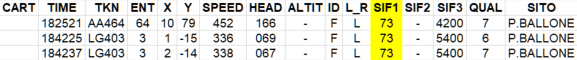
Dal tabulato radar di Poggio Ballone scaricabile da STRAGI80.it risultano presenti tre righe con SIF1 = 73.
Il collegio peritale Dalle Mese cerca fin da subito d'indirizzare Priore nella giusta strada prendendo in considerazione la possibilità che i piloti potessero usare il codice 73 per segnalare la loro posizione e non un'emergenza, come risulta a pag. 46 dell'estratto "Capitolo LXXXVII - Perizia radaristica Dalle Mese ed altri - 16.06.97." dell'"Ordinanza di rinvio a giudizio - Sentenza istruttoria di proscioglimento" pronunciata dal Giudice Istruttore Rosario Priore.
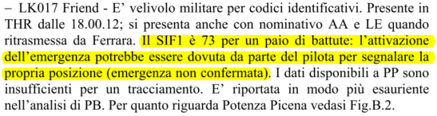
Qui vediamo la parte che c'interessa relativamente alla traccia LK017.
Il tentativo fatto dal collegio peritale per sottolineare un utilizzo alternativo del SIF1 = 73, a quanto pare, è andato completamente a vuoto, poiché Priore rimane fermo nella sua convinzione.
Egli, non solo si mostra convinto che il SIF1 = 73 sia solamente usato per indicare un'emergenza, ma conia un nuovo concetto dell'emergenza, distinguendo l'"emergenza generale" da "emergenza velivolo".
La fantasiosa distinzione tra i due tipi d'emergenza non trova riscontro nemmeno nel rapporto della NATO, trasmesso alle autorità italiane nell'intento di attribuire una possibile identità di alcune tracce.
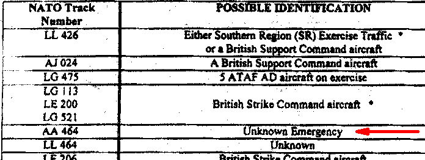
Questo estratto della tabella 1 (contenuta nel rapporto) mostra "Unknown Emergency" per la traccia AA464, quella che squocca il famoso 73 di modo 1.
Quindi gli esperti della NATO non la definiscono né "generale" né "velivolo", ma semplicemente emergenza sconosciuta, poiché il pilota non ha impostato il codice di modo 3 che deve essere usato per specificare un'emergenza generica (codice 7700) o un'avaria alla radio (codice 7600). Ciò significa che il pilota non voleva segnalare alcuna emergenza, ma stava, invece, facendo quello che ipotizza il collegio Dalle Mese: stava evidenziando la propria posizione al controllore che lo aveva in carico.
La totale mancanza di significato in ciò che scrive Priore, inventando un'"emergenza generale" che sarebbe diversa dall'"emergenza velivolo", risulta ancor più evidente solo se si conosce l'utilizzo del transponder e il motivo che i piloti hanno per evidenziare ai controllori una situazione di emergenza.
Partiamo dalle basi, prendendo come riferimento il documento che può essere considerato la "bibbia" sull'utilizzo del transponder in ambito NATO: ACP 160 "IFF/SIF OPERATIONAL PROCEDURES".
La versione in vigore nel periodo della strage di Ustica è contenuta nel documento "WP003370_001.DOC"
fonte, pubblicato il 30.01.78 ed entrato in vigore in data 04.02.80.
Siccome il documento è in lingua inglese, per comodità sarà riportata anche la libera traduzione dei brani estratti, con eventuali commenti esplicativi. È chiaro che la libera traduzione non cambierà in alcun modo il significato originale, ma chi avesse bisogno della traduzione letterale può usare uno dei tanti traduttori online, come DeepL Translator, solitamente molto affidabile.
Sebbene sia già stato detto, conviene iniziare con l'appurare la funzione che ha l'IFF; la troviamo nel capitolo 1 (a fondo pag. 2):
|
IFF SYSTEMS HAVE BEEN ADOPTED FOR THE PRIMARY FUNCTION OF ASSISTING IN THE RAPID
AND POSITIVE IDENTIFICATION OF FRIENDLY UNITS AND SECONDLY ASSISTING IN THE
TRACKING AND CONTROL OF AIRCRAFT.
|
L'IFF è stato adottato con la principale funzione d'assistenza nella rapida e positiva identificazione delle unità amiche e, secondariamente, nel tracciamento e controllo degli aerei.
|
È chiaro fin da subito che l'IFF viene usato dai piloti per consentire ai controllori d'identificarli rapidamente e senza possibilità di confonderli con altri aerei.
In assenza dell'IFF, la positiva identificazione avveniva facendo compiere ai piloti noiose manovre (come una virata su una determinata prua per almeno un minuto), perché il controllore doveva avere l'assoluta certezza d'impartire le autorizzazioni proprio all'aereo voluto, senza possibilità di confonderlo con un altro.
Grazie all'IFF, l'identificazione del traffico si è enormemente velocizzata, perché il controllore non deve più aspettare la comparsa di tutti i plot ricevuti dal radar primario che mostrano l'effettiva esecuzione della manovra ordinata all'aereo.
L'identificazione è anche positiva, oltre che rapida, perché il controllore assegna codici diversi ai vari aerei, grazie all'avvento dell'IFF Mark X (SIF).
Passiamo subito all'argomento che c'interessa in questo paragrafo: l'emergenza. La troviamo nel paragrafo "302. OPERATION", a pag. 4, che specifica:
|
A. THE FOLLOWING MODE OPERATION HAS BEEN ADOPTED FOR WORLDWIDE USE
|
La seguente modalità operativa è stata adottata a livello mondiale.
|
Poi, al punto 6 leggiamo:
(6) EMERGENCY (DISTRESS) FEATURE. THIS SIGNAL RESPONSE IS SELECTABLE BY
TRANSPONDER SWITCH SETTING. WHEM SELECTED IT WILL CAUSE THE TRANSPONDER TO REPLY
TO EACH INTERROGATION WITH FOUR PULSE TRAINS SPACED 4.35 MICROSECONDS BETWEEN
TRAINS. THIS PROVIDES A DISTINCTIVE DISPLAY FOR RECOGNITION BY OPERATORS AT THE INTERROGATING LOCATION.
EMERGENCY TRANSPONDER REPLIES WILL CONTINUE TO BE
TRANSMITTED WITH EACH INTERROGATION UNTIL THE SWITCH SETTING IS CHANGED BY THE AIRCREW.
WHILE THE SELECTION OF THE EMERGENCY SIGNAL BY THE AIRCREW WILL CAUSE
THE TRANSPONDER TO REPLY IN THE APPROPRIATE MANNER, THERE ARE TIMES IN WHICH THE
SIGNAL CAN BE ERRONEOUSLY CAUSED TO APPEAR AT THE INTERROGATING LOCATION (I.E.,
WHEN TRACKS CROSS AT DIFFERENT ALTITUDES).
THEREFORE, THE MODE 3/A EMERGENCY RESPONSE FEATURE WILL INCLUDE THE USE OF CERTAIN CODE SETTINGS TO INSURE
RECOGNITION OF THE EMERGENCY AT ALL TIMES. THE CODE SELECTED WILL BE 77 OR 7700,
DEPENDING ON THE TYPE OF TRANPONDER. CODE 76 OR 7600 IS RESERVED FOR RECOGNITION
OF AN AIRCRAFT WITH RADIO COMMUNICATIONS FAILURE. CODE 7500 SHALL BE USED ON
MODE 3/A TO PROVIDE RECOGNITION OF AN AIRCRAFT HAVING HIGH JACKERS ON BOARD.
|
Questa risposta d'emergenza è selezionabile tramite l'interruttore del transponder. Quando selezionata, il transponder replica ad ogni interrogazione con quattro treni d'impulsi spaziati 4,35 µs tra loro. Questo fornisce un'indicazione inconfondibile agli operatori radar.
Le risposte d'emergenza continueranno ad essere trasmesse ad ogni interrogazione fino a quando l'equipaggio del velivolo non cambia impostazione del transponder.
Sebbene l'impostazione dell'emergenza da parte di un equipaggio comporterà l'appropriata risposta del transponder, ci sono casi in cui l'emergenza compare erroneamente sullo schermo radar (pur in assenza di velivoli che la trasmettono), ad esempio quando due o più rotte s'incrociano a quote diverse (aerei che transitano sulla reciproca verticale).
Pertanto, la risposta d'emergenza nel modo 3/A includerà l'uso di determinate impostazioni di codici per assicurare il riconoscimento dell'emergenza in ogni momento. Il codice selezionato sarà 77 o 7700, in funzione del tipo di transponder (per gli F-104, che ha solo due cifre per il modo 3/A, il codice è 77). Il codice 76 o 7600 è riservato per il riconoscimento di un'avaria radio. Il codice 7500 deve essere usato nel modo 3/A per far riconoscere un aereo con dirottatori a bordo.
|
Fin qui, due cose risultano evidenti:
- la trasmissione dell'emergenza serve per mettere in evidenza sullo schermo radar l'aereo che la segnala;
- la modalità riferita dall'AMI per segnalare un'emergenza è totalmente diversa rispetto allo standard NATO.
È utile aggiungere che quanto riferito dall'AMI sul codice 73 di modo 1 che sarebbe usato per segnalare un'emergenza non trova riscontro in qualsivoglia documento (a parte il manuale AMI declassificato consegnato all'A.G.).
Questo, comunque, non significa che in tempi remoti, l'AMI non possa aver stabilito come "standard" nazionale che il SIF1 = 73 era convenzionalmente riservato all'indicazione di un'emergenza; convenzione che potrebbe essere stata mantenuta anche dopo la standardizzazione NATO valida per tutti i paesi facenti parte dell'alleanza.
Sebbene questa sorta di convenzione a livello nazionale possa risultare verosimile, è, al contrario, difficile poter credere che la mera ricezione del codice 73 nelle risposte di modo 1 possa far scattare l'allarme della postazione radar, perché per far ciò, è necessario che il decodificatore del radar sia stato programmato per attivare la circuiteria che attiva l'allarme in presenza dello specifico codice 73 di modo 1. L'allarme, come scritto da Priore nel brano riportato in precedenza, consiste nel SOS-SIF settato a 2 e blink settato a 1, parametri che attivano l'accensione di un'apposita spia della postazione radar. Alcuni controllori riferiscono che si attiva anche una sirena, come, ad esempio, fa De Giuseppe (v. WP000476_001
fonte a fondo pag. 1):
A D.R.: IN CASO DI SIF 1 = 73 E' EMERGENZA, SI ACCENDONO LE SPIE IN BLINKING,
SUONA LA SIRENA DI CONSOLLE PERCEPIBILE OVUNQUE NELLA SALA E GLI ADDETTI SI
CONCENTRANO SU QUELLA TRACCIA. UN'IPOTESI DEL GENERE SI VERIFICA SETTE-OTTO
VOLTE IN UN ANNO.
Considerando che tutto ciò deve avvenire quando il decodificatore del radar secondario riconosce un'emergenza e che in ambito NATO l'emergenza non ha niente a che vedere con il SIF1 = 73, si deve dedurre che le apparecchiature radar della D.A. installate in Italia fossero state appositamente modificate per far scattare tutti i segnali d'allarme in presenza di plot con il SIF di modo 1 uguale a 73; qualche dubbio può esserci.
Ad ogni modo, non si può far altro che prendere atto di questa bizzarra anomalia che vede un paese NATO infischiarsi delle regole, adottando una sorta di convenzione nazionale al posto di uno standard valido in tutta l'alleanza.
Andiamo avanti scendendo maggiormente nel dettaglio per capire in cosa realmente consisteva l'emergenza in ambito NATO.
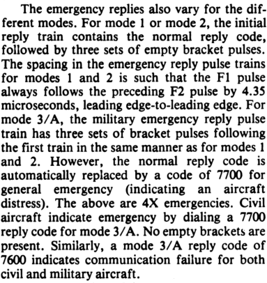
Qualunque pubblicazione tecnica che tratti l'IFF Mark X (SIF) è valida per accertare quale fosse la procedura per segnalare un'emergenza; vediamo, ad esempio, il manuale d'addestramento "
Operations specialist 3 & 2, Volume 1", dove a fondo pag. 124 (pag. 7-2 del manuale) si può leggere l'estratto riportato qui a sinistra.
Quando viene selezionata l'emergenza con l'apposita manopola, le risposte di modo 1 e 2 vengono modificate dall'IFF aggiungendo tre gruppi di
frame (impulsi F1 e F2 della figura 7-1) alla normale risposta, cioè viene trasmessa la normale risposta contenente il codice impostato nel rispettivo modo 1 o 2 più altre tre risposte contenenti "00" nel modo 1 e "0000" nel modo 2 (nessun impulso oltre ai due impulsi di inizio e fine
frame, F1 e F2).
Per il modo 3 vale quanto appena detto, ma con la differenza che il codice impostato dal pilota viene automaticamente sostituito con 7700, così da essere compatibile con i radar civili, che riconoscono questo codice di modo A (equivalente al modo 3 militare) come un'emergenza.
È chiaro che le risposte d'emergenza vengono trasmesse solo se viene ricevuta la rispettiva interrogazione, altrimenti l'IFF non trasmette niente. Quindi, alla ricezione, ad esempio, dell'interrogazione di modo 3, l'IFF trasmette il primo treno d'impulsi contenente 7700, cosicché l'emergenza viene vista dai controllori civili, poi seguono i tre treni d'impulsi per completare l'emergenza 4X (esclusivamente militare).
Qualunque sia il documento consultato, dunque, risulta che non c'è da impostare alcun codice, perché l'IFF provvede a replicare alle interrogazioni nel modo previsto dallo STANAG 5017, standard NATO che definisce (o, meglio, definiva) nel dettaglio il funzionamento degli apparati IFF Mark X (SIF), come l'AN/APX-46 montato negli F-104, nel 1980.
Aprendo una breve parentesi, il brano riportato è anche utile per sfatare una delle innumerevoli bufale sui codici transponder.
Tra le tante bugie che si possono trovare in rete, c'è anche quella in cui si afferma che il codice 7700 di modo 3/A nel 1980 non esisteva (!). Questa bufala viene solitamente proferita con il fine di evidenziare che un'emergenza poteva essere segnalata solamente impostando il codice 73 nel modo 1 (niente di più falso) e, quindi, la sua presenza nei tabulati può solo indicare una reale emergenza.
Abbiamo appena appurato, però, quanto sia falsa questa affermazione.
Per completare l'argomento dell'emergenza in ambito NATO, vediamo come viene trasmessa e visualizzata una risposta d'emergenza negli schermi dei radar.
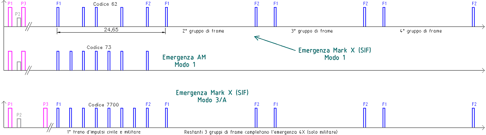
Qui vediamo le forme d'onda generate dall'IFF quando viene impostata l'emergenza.
Gl'impulsi di colore viola sono quelli trasmessi dall'SSR (interrogazione), mentre quelli blu sono trasmessi dall'IFF dell'aereo (risposta).
Il diagramma serve anche per fare il confronto tra l'emergenza riferita dall'AMI e quella dello standard Mark X (SIF). Infatti, vediamo che la risposta standard, trasmessa semplicemente ruotando la manopola dell'IFF su "MASTER", inizia con il primo treno d'impulsi contenente il codice impostato dal pilota (62, nell'esempio), al quale vengono aggiunti 3 treni d'impulsi vuoti (equivalenti a 00), cioè composti dai soli impulsi di
frame.
L'emergenza AMI, invece, consiste nella sola risposta normale in cui il codice deve essere impostato manualmente dal pilota su 73.
Uno dei vantaggi della risposta standard è che il controllore non perde il codice di modo 1 quando il pilota segnala l'emergenza, mentre con l'emergenza AMI il codice di modo 1 viene perso, perché il pilota deve sempre impostare 73. Un altro significativo vantaggio è che si riducono le false emergenze ricevute in presenza di due o più aerei molto vicini tra loro.
La risposta di modo 3/A standard è simile a quella di modo 1, con la differenza che l'IFF trasmette automaticamente 7700, a prescindere dal codice impostato dal pilota. Il primo treno d'impulsi è sufficiente ai radar civili per ricevere l'emergenza, ma non lo è per quelli militari, che attendono i successivi 3 gruppi vuoti (come per il modo 1) per completare l'emergenza 4X (esclusivamente militare).
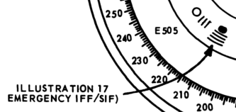
Il manuale "
Aerospace Control and Warning Systems Operator" riporta (come tanti altri) a pag. 11 la figura 1-9 in cui vengono mostrati vari simboli presentati dall'apparato AN/UPA-35, in uso nei siti fonetico-manuali della D.A. nel 1980.
Oltre al plot del radar primario vengono riportati 4 archetti rappresentanti i 4 gruppi di
frame dell'emergenza. Siccome la spaziatura temporale è 24,65 µs, gli archetti sono visualizzati sullo schermo distanziati di 2 nm uno dall'altro.
È ben evidente come il simbolo richiami l'attenzione del controllore.
Dopo aver visto tutti i dettagli su come l'emergenza viene segnalata, possiamo iniziare a ragionare sul perché è importante che sia ben visibile sullo schermo radar.
Un aereo, di solito è contemporaneamente presente sullo schermo di vari enti: difesa aerea, controllori d'area civili e militari, controllori d'avvicinamento civili e militari. Ad esempio, un aereo di linea in volo tra Firenze e Bolsena poteva comparire sugli schermi della difesa aerea di Poggio Ballone, del controllore d'avvicinamento di Grosseto, del controllore d'area (ACC) di Roma e su quello del suo omologo militare di Roma Military.
Tra tutti quei controllori, quello dell'ACC di Roma è l'unico ad essere interessato a quel traffico, tutti gli altri lo ignorano, perché non di loro competenza (la D.A. lo ignora dopo aver appurato che è friendly).
Se quell'aereo segnala un'emergenza, tutti i controllori (facenti capo ad un ente dotato di radar) vedono il simbolo evidenziato sullo schermo, ma l'unico controllore direttamente interessato all'emergenza è quello che ha in carico l'aereo, perché il suo compito primario diventa quello di dare la precedenza all'aereo in emergenza su tutto il restante traffico; se deve atterrare, gli sgombra la strada fino all'avvicinamento finale, se deve abbassarsi di quota, gli toglie tutto il traffico interferente, ecc.
Quindi è questa l'importanza di avere sullo schermo un simbolo immediatamente distinguibile dagli altri. Abbiamo, infatti, visto che i motivi di esistere dell'IFF sono: assistenza nella rapida e positiva identificazione delle unità amiche, tracciamento e controllo degli aerei. Tali motivi si applicano anche alla situazione d'emergenza: rapida e positiva identificazione delle unità amiche in emergenza, tracciamento e controllo dell'aereo che la segnala.
Non esiste nessun altro motivo per segnale un'emergenza oltre a quanto appena detto. La frase fa riferimento, evidentemente, alla fantasiosa suddivisione dell'emergenza in "emergenza generale" e "emergenza velivolo"; esiste solo l'"emergenza velivolo". Questa può essere precisata, quando applicabile, utilizzando i codici già visti per il modo 3/A: 7500 = atti di pirateria, 7600 = avaria radio; altrimenti s'inserisce 7700 per un'emergenza generica, cioè diversa dalle altre due. Quest'ultimo tipo di emergenza viene riferito al controllore dal pilota e può riguardare il motore, i flap, la strumentazione o decine di altre cose diverse dall'avaria radio, ma sempre e comunque relative all'aereo che la segnala, non a cose esterne all'aereo. Non ha alcun senso né alcuna utilità evidenziare i plot di un aereo se l'emergenza è estranea all'aereo che la segnala.
A tal proposito, una delle tante bufale sul SIF1 = 73 racconta che il pilota del caccia di ritorno da Villafranca lo abbia "squoccato" per segnalare la presenza del MiG "sotto" al DC-9 Itavia, ma è una cosa priva di senso per due motivi.
Il primo è che il controllore, non vedendo nessuna emergenza nel modo 3, avrebbe chiesto al pilota di specificarla; tanto valeva riferire subito al controllore in UHF la presenza del MiG, senza giocare con l'IFF, perché, se è vero che era un'emergenza "generale", tutti dovevano saperlo per affrontare questa terribile minaccia rappresentata da un catenaccio volante.
Tra l'altro, da quanto si può dedurre dalle testimonianze di alcuni controllori, era quasi più facile vedere un aereo libico nel cielo italiano che un aereo della NATO (v. "Presenza del MiG-23 → Autorizzazioni ad aerei non NATO"), tanto che la presenza di un MiG-23 non doveva destare molto scalpore tra piloti e controllori militari.
Il secondo motivo che evidenzia l'insensatezza della bufala ce lo spiegano alcuni controllori.
Il prezioso Del Zoppo, guida caccia a Marsala e addetto alla Sezione Addestramento dell'Ufficio Operazioni, riferisce (v. "WP000520_001.DOC"
fonte a partire da fine pag. 3):
IL 73 SIGNIFICA EMERGENZA C'E' PERO' DA PRECISARE CHE DI NORMA NON E' SUFFICIENTE
OSSERVARE UN CODICE 73 PER UNO O DUE GIRI D'ANTENNA PER POTER ESSERE CERTI CHE
SI TRATTI DI UNA EFFETTIVA EMERGENZA, O NON SOLAMENTE DI ERRATA LETTURA DEL
CODICE DA PARTE DELL'APPARATO O DI MAL FUNZIONAMENTO TEMPORANEO DELL'APPARATO.
SE INVECE IL CODICE 73 VIENE RIPETUTO PER PIU' GIRI D'ANTENNA, L'EMERGENZA E'
CONFERMATA;
Ulteriori evidenze sull'infondatezza di questa bufala le abbiamo da De Giuseppe Antonio, maresciallo, all'epoca dei fatti, in servizio a Poggio Ballone in qualità di guida caccia del turno delta (v. "WP000630_001.DOC"
fonte pag. 11):
SE IO CONTROLLORE STO LAVORANDO CON 3-4 AEREI, E DICO A UNO: "QUAL'E' IL TUO CODICE?" E QUELLO MI
DICE: "1000.", GUARDO E TROVO TRE AEREI COL CODICE 1000, OPPURE DUE AEREI COL
CODICE 1000, GLI DO ALTRI CODICI, TIPO IL FLASH, TOCCATE FLASH, E DUE AEREI MI
TOCCANO FLASH, L'ULTIMA CARTUCCIA CHE IO HO, DOPO SI PASSA AD ALTRE COSE,
"TOCCATE 20 SECONDI EMERGENZA.", VA BENE, HA UN PULSANTE DIETRO, INSERISCE IL
PULSANTE DI EMERGENZA, ALLORA E' L'UNICO AEREO, A MENO CHE NON MI FACCIANO UNO
SCHERZO, CHE INSERISCE L'EMERGENZA, ED IO HO LA CERTEZZA MATEMATICA DI SAPERE
CON CHI STO PARLANDO, MA RIPETO: MASSIMO 20 SECONDI., TANT'E', INIZIALMENTE, IO
PARLO.. QUESTI SIGNORI PROBABILMENTE NON C'ERANO ANCORA IN AERONAUTICA, ERAVAMO
OBBLIGATI A CHIEDERE L'AUTORIZZAZIONE AL SETTORE, MA SOLO PER 20, MASSIMO 30,
SECONDI, IL TEMPO DI VISUALIZZARE L'AEREO IN EMERGENZA E QUINDI ERA LUI, MA E'
TUTTO AUTOMATICO, LUI FA COSI' 30 SECONDI E AUTOMATICAMENTE CESSA, ECCO L'UNICO
CASO CHE SI PUO' RISALIRE CHE NON SIA EFFETTIVAMENTE UN'EMERGENZA REALE.
Il controllore sta dicendo che al momento d'identificare un dato aereo, poteva capitare che alcuni aerei avessero lo stesso codice di transponder impostato nel pannello SIF.
In tal caso, il controllore dava l'ordine "squocchi flash" al pilota e questi doveva attivare il deviatore a levetta I/P posto nel pannello IFF. Così facendo, il simbolo dell'aereo appariva sullo schermo radar diverso dagli altri per una trentina di secondi (due giri d'antenna), indicando univocamente la posizione dell'aereo. Se, però, l'I/P veniva premuto da due piloti all'incirca nello stesso momento, il controllore continuava a non poter distinguere l'aereo che doveva identificare.
Come ultima possibilità, il controllore ordinava d'inserire il pulsante dell'emergenza, ottenendo, anche in questo caso, un simbolo sullo schermo ben evidente (come abbiamo visto).
Ecco, dunque, spiegato il banale motivo della presenza di quei "flash" isolati, che niente hanno a che fare con un'emergenza.
È estremamente rilevante il fatto che questo controllore non parla di codice 73, ma parla di usare un apposito pulsante per segnalare l'emergenza, proprio come previsto dai documenti applicabili (come l'ACP 160).
Come ultima considerazione, si può rilevare che un codice di modo 1 viene visto solamente dai controllori dei radar militari, mentre quelli del traffico aereo (civile) non lo vedono. L'attivazione dell'I/P (usata per segnalare la posizione), invece, viene vista sia dai controlli civili che militari.
L'utilizzo del SIF1 = 73 come indicazione di posizione, quindi, poteva essere una forma di "gentilezza" nei confronti dei controllori civili, che non vedono il simbolo evidenziato per un aereo che non è sotto il loro controllo.
Codice 7777 del SIF di modo 2
L'impossibilità di cambiare in volo il codice di modo 2 è di particolare interesse in relazione al tabulato radar di Poggio Ballone (scaricabile da
STRAGI80.it).
I periti d'ufficio, infatti, associano a due TF-104G di ritorno dalla missione a Villafranca (v. "I due F-104") alcuni plot con SIF di modo 2 uguale a 7777 che, in base al manuale di volo, poteva essere impostato solo a terra.
Il documento Electronics Technician - Volume 4—Radar Systems - NAVEDTRA 14089 e la sua versione online indica con assoluta chiarezza il significato del codice 7777 di modo 3/A: "A 7777 reply code is assigned to interceptors on active air defense missions" (il codice 7777 è assegnato agli intercettori in missioni di difesa aerea attiva).
Un'ulteriore conferma viene dall'"Aeronautical Information Manual" pubblicato dalla Federal Aviation Administration: "Under no circumstances should a pilot of a civil aircraft operate the transponder on Code 7777. This code is reserved for military interceptor operations.".
Sebbene entrambi i documenti facciano riferimento al modo 3/A (non al modo 2), è possibile che lo stesso codice 7777 venga usato in modo 2 ogniqualvolta risulti prudente o necessario evitare che i controllori del traffico aereo civile (che ricevono solo i modi 3/A e C) vengano inutilmente o inopportunamente allertati per ciò che sta accadendo in ambito militare.
Ciò sarebbe ancor più giustificato dalla possibile presenza di un AWACS che sembra coordinare gli aerei aventi SIF2 = 7777 (v. "Presenza dell'AWACS").
Il documento "GlobalSecurity.org - CHAPTER 3. AIR DEFENSE" spiega molto dettagliatamente il significato di "active air defense". Usando le prime frasi riportate nel documento, si può riassumere che la difesa aerea attiva consiste nell'usare gli aerei disponibili, l'armamento preposto per la difesa aerea e la guerra elettronica per raggiungere l'obiettivo. La difesa aerea attiva può anche impiegare un armamento non abitualmente usato nell'attività di difesa aerea.
Siccome l'attribuzione del codice 7777 di modo 2 ad un'intercettazione è soltanto un'ipotesi (la certezza la si ha solo per il modo 3/A), si può provare a dedurne un altro possibile significato in base alle testimonianze rese da alcuni controllori della difesa aerea.
Tra i documenti utili, si può iniziare con la lettura dell'esame di Del Zoppo: "WP000520_001.DOC"
fonte. Il documento riporta alcune informazioni relative all'utilizzo dei modi 1, 2 e 3/A; sono meno di quattro pagine e vale sicuramente la pena leggerlo.
Ulteriori sue dichiarazioni sono verbalizzate nel documento: "WP000657_001.DOC"
fonte, nel quale si può leggere a pag. 1: "ORDINE DI TRASPONDER SIGNIFICANO GLI ORDINI CHE SI DANNO AL PILOTA CIRCA L'USO DEL TRASPONDER DI BORDO DURANTE LA MISSIONE. AD ESEMPIO TRASPONDER ON-OFF, OPPURE ON FINO A... E OFF DA... OPPURE IL CONTRARIO.".
Abbiamo, infine: "WP000630_001.DOC"
fonte, in cui vengono messe a confronto le testimonianze rese da alcuni controllori della D.A.
Quello che si può affermare con certezza in merito al codice 7777 di modo 2 (a prescindere dalle ipotesi), è che normalmente non viene assegnato ad alcun aereo, perché gli aerei hanno un codice assegnato secondo tabelle disponibili al personale interessato (meccanici e controllori militari).
Il fatto che un aereo abbia il SIF2 = 7777 ha la duplice conseguenza d'impedire di risalire al suo gruppo d'appartenenza e, al tempo stesso, consente di essere identificato senza alcun dubbio da chi sa che un dato aereo con SIF2 = 7777 dovrà compiere una data missione, perché, essendo l'unico in zona ad avere quel codice, l'identificazione sarà certa.
Se aggiungiamo gli ordini di transponder "ON-OFF" di modo 2, otteniamo un aereo dall'identità ignota alla quasi totalità dei radaristi della D.A. che segnala l'avanzamento di una missione usando il transponder, senza far ricorso alle comunicazioni a voce che possono, invece, essere utilizzate per la consueta ricezione e conferma delle autorizzazioni di volo (cambio rotta, quota, avvicinamento e atterraggio). Di tutto ciò, è bene precisarlo, i controllori del T.A. non si accorgono, perché non ricevono i codici di modo 1 e 2.